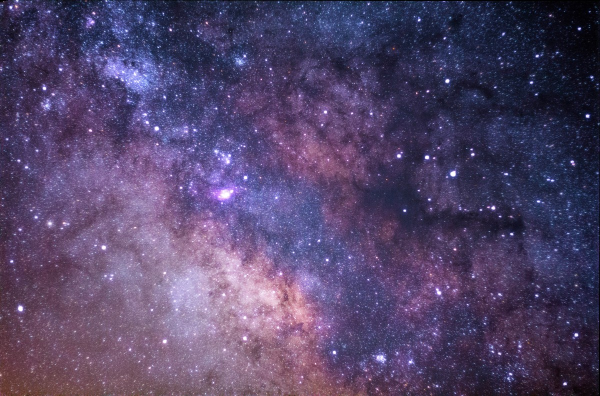

Qual o tamanho do espaço sideral?
Assim como diversas questões a respeito do espaço sideral, o tamanho do universo é uma pergunta difícil de responder. Por exemplo, não se sabe se existe algo além do que os telescópios existentes conseguem detectar. Contudo, os estudos existentes até o momento, não conseguem definir um tamanho exato. O espaço sideral pode ter uma medida, e mesmo assim, ser infinito.

Para exemplificar melhor, podemos chamar de “universo observável”, que é o termo que os cientistas usam para medir o que podemos enxergar no espaço, com a tecnologia que temos. De acordo com o Big Bang, tudo o que conhecemos existe há 13,8 bilhões de anos-luz. Logo, o diâmetro do universo observável representa algo em torno de 27,6 bilhões de anos-luz? Na verdade, não. Acontece que o universo está em expansão de forma acelerada. Por conta disso, cientistas acreditam que o diâmetro do universo observável é estimado em 93 bilhões de anos-luz. Além disso, seu formato seria plano e sua projeção, infinita.